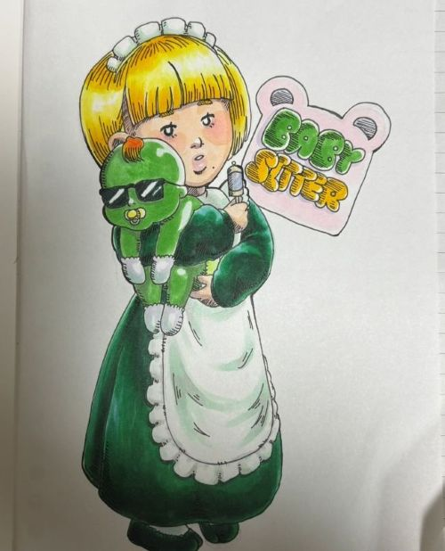
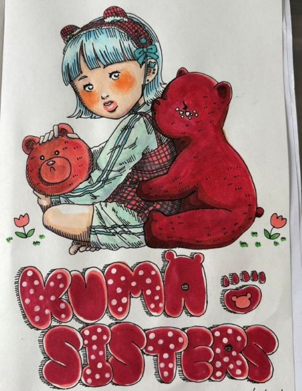
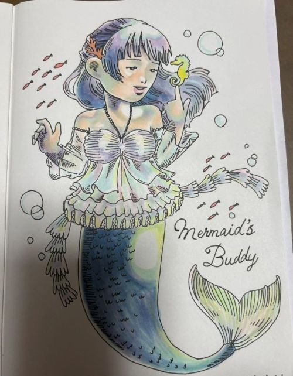
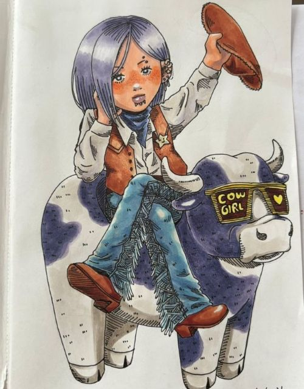
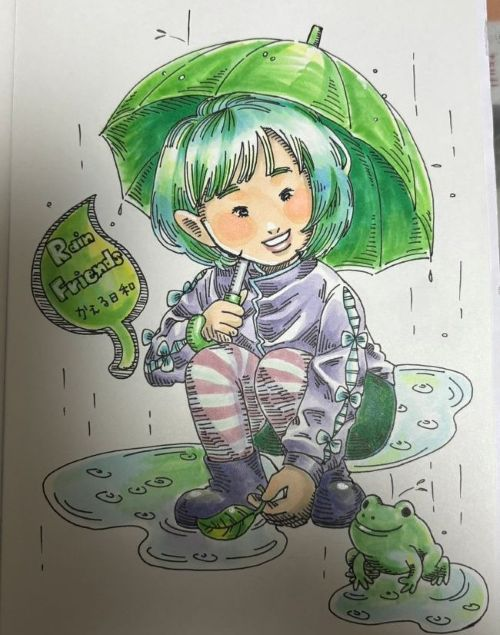
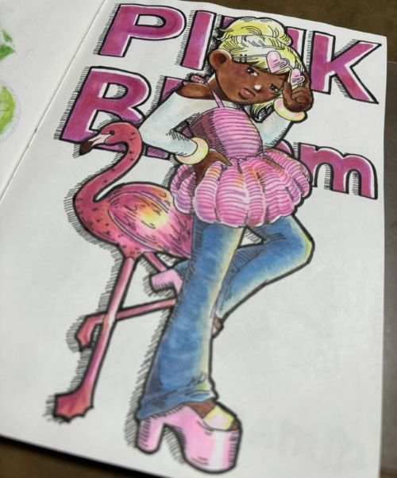
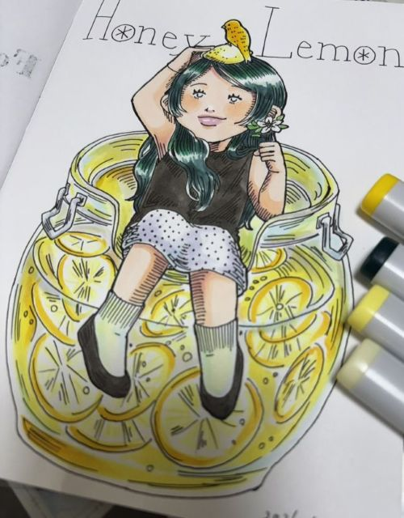
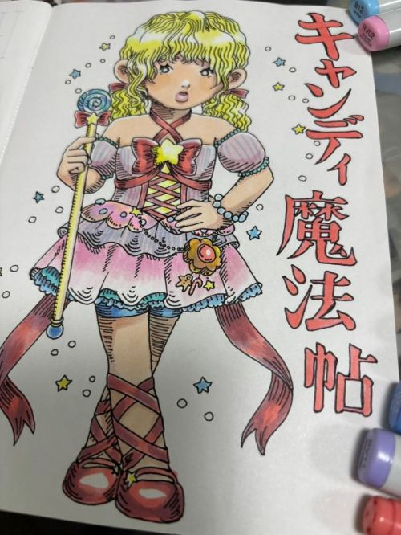
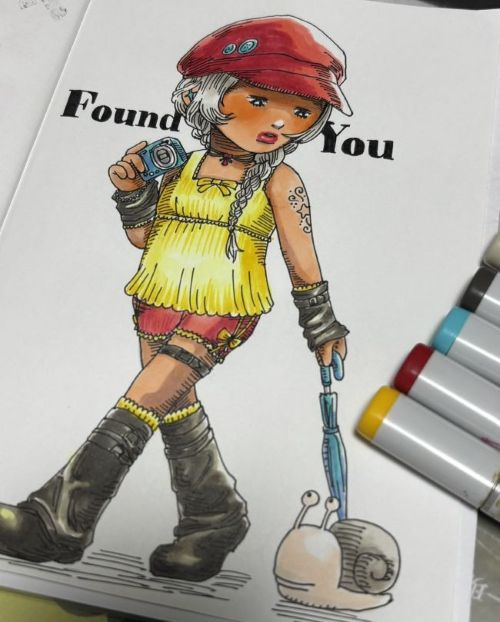
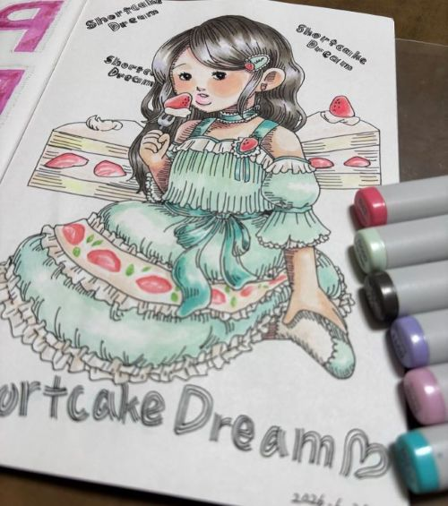

今週のイラスト一覧
目次
- 2026-04-24：ダイヤモンドのイラスト
- 2026-05-01：ミュシャ風イラスト
- 2026-05-08：ディズニーの写真風イラスト
- 2026-05-15：緑のメイドさんのイラスト
- 2026-05-22：クマと女の子のイラスト
- 2026-05-29：人魚姫のイラスト
- 2026-06-5：カウガールのイラスト
- 2026-06-12：雨の日のイラスト
- 2026-06-19：ピンクのイラスト
- 2026-06-26：レモンのイラスト
- 2026-07-03：魔法少女のイラスト
- 2026-07-10：黄色のイラスト
- 2026-07-17：ケーキの女の子のイラスト
4月24日のイラスト

2026.04.24
4月の誕生石「ダイヤモンド」をテーマに描きました。
ダイヤモンドに座る女の子を描いています。
5月1日のイラスト

2026.05.01
ミュシャの作品を参考にしながら、装飾的な雰囲気を意識して描きました。
曾祖母への誕生日プレゼントとして制作したものです。
5月15日のイラスト

2026.05.15
緑色中心の絵を描きました。メイドさんと宇宙人のような赤ちゃんがポイントです。
5月22日のイラスト

2026.05.22
赤と水色の２色で描き上げました。女の子の表情がかわいくてお気に入りです。
5月29日のイラスト

2026.5.29
人魚姫を描きました。海の中でいろんな色の光に当たっているのを表現しました。
6月5日のイラスト

2026.06.05
カウガールのイラストです。牛の模様を紫にして女の子の色と合わせることで統一感を出しています。
6月12日のイラスト

2026.06.12
梅雨の時期なので、雨の日のイラストをかわいく描きました。
6月19日のイラスト

2026.06.19
ピンクで派手なイラストになりました。フラミンゴとポーズを揃えているのがポイントです。
6月26日のイラスト

2026.06.26
初夏の爽やかな感じをイメージして、レモンと女の子を描きました。
7月3日のイラスト

2026.07.03
魔法少女を描きました。文字を昔の漫画風にしたのがこだわりです。
7月10日のイラスト

2026.07.10
散歩する女の子を描きました。黄色と赤の組み合わせがお気に入りです。
7月17日のイラスト

2026.07.21
イチゴのショートケーキをモチーフにした女の子のイラストです。パステル調で仕上げました。
コララインのイラスト：こだわりポイント紹介

完成イラストの全体図です。

髪の青は5色を重ねて、光の当たり方を細かく調整しています。
手に持っているのは“マイク”ではなく、原作を意識した「ボタンのカギ」。
小物の設定までこだわっています。
顔まわりの影は濃くしすぎないようにして、柔らかい雰囲気を残しました。

黄色の服は影を強めに入れて、立体感を出しています。